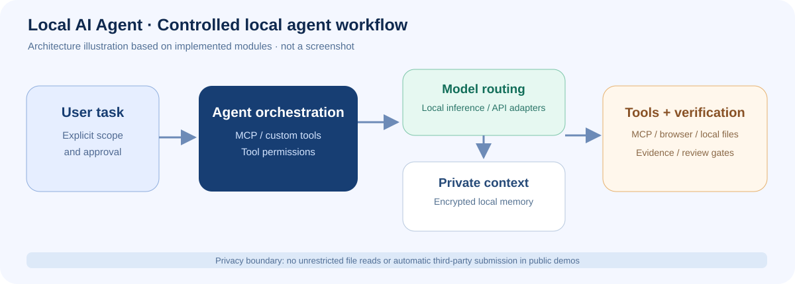
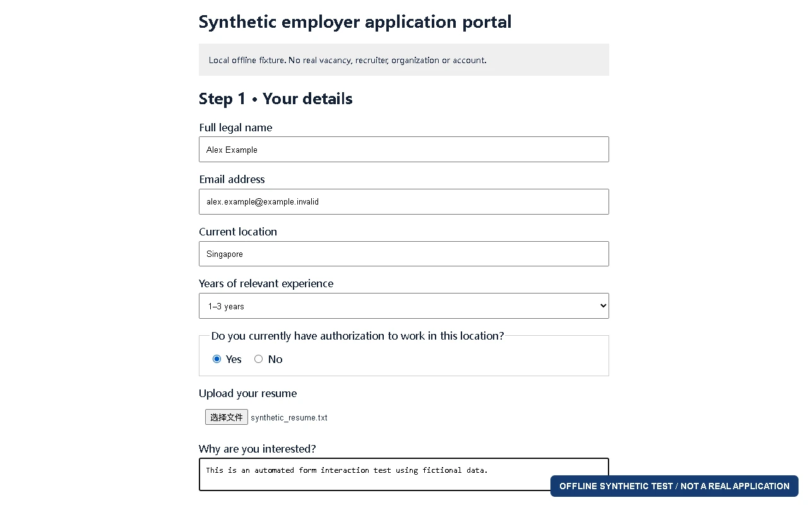

01
Locally verified
Local inference & model interfaces
Local-model conversation and tool calling, with a verified long-context configuration and direct-output mode. Model adapters are separated from application tools.
I am Sheng Xing. I work on local AI agents and cross-platform software, building workflows around inference, memory, video generation and tool execution, and testing those ideas through applications, interactive prototypes and research.
Local runtime excerpt · Full frame
AI tools & automation
Cross-platform & web products
Games & interactive prototypes
Full-frame views of interface design, character modeling and interactive environments. Runtime captures, design concepts and model previews are identified separately.
Capability modules built around local AI workflows, described at their verified scope.
Locally verified
Local-model conversation and tool calling, with a verified long-context configuration and direct-output mode. Model adapters are separated from application tools.
Generation module tested
Image input, local model inference and MP4 export have produced real output. Motion consistency and visual quality require review; one-click generation through the main agent remains in integration.
Retrieval module tested
Full-text indexes over archived project materials and conversations support source tracing. Retrieval is blocked while the encrypted vault is locked; full-text search is not presented as semantic memory.
Core toolchain verified
Connects models to custom memory, asset-checking and approved-task tools, with real invocation and result records for the core toolchain.
Six anonymized cases organized around engineering capabilities, interfaces and observable results, without disclosing unreleased product identities or design plans.

Architecture overviewBeyond chat: inference, memory, video and tools.
A development workbench spanning local models, encrypted memory retrieval, MCP tools, image-to-video generation and media processing, with asset checks, approved test tasks and resource safeguards.

Offline form validationConnecting information workflows and browser actions.
Organizes public job information and tests browser forms, attachment preparation and human review. The demo uses an offline test page and example data, stopping before submission.
 iPadOS simulator capture
iPadOS simulator captureNative editing, shared data and interaction states.
Develops native editing, recovery and assistive-interaction modules across tablet and desktop surfaces. Public excerpts focus on editing tools and appearance settings.
Coherent layouts, controls and feedback.
Frontend work on responsive layout, bilingual navigation and component states. Full-frame interface captures show the original visual design; public descriptions avoid internal project names.
Connecting character movement with environment presentation.
Tests character movement, environment layers and state transitions in a local engine prototype, using full-frame runtime footage.
 UI design concept
UI design conceptDemonstrating implementation without publishing the full design.
Runtime screenshots and visual concepts show interaction, visualization and interface work; descriptions omit internal names and full mechanics.
Mathematical modeling and social statistics inform how I approach engineering: define the question, choose the method and examine the result. These studies connect dynamical systems with longitudinal survey analysis.
My background combines undergraduate study in Information and Computing Science with master's-level work in Social Research Methods and Statistics. I apply that training to AI applications and interactive software through requirements analysis, integration, iterative design and testing.
Personal projects combine custom modules, licensed resources and AI-assisted development. Public cases use generic names while full-frame imagery illustrates engineering and interaction. Original project files remain private.
Find more on GitHub ↗